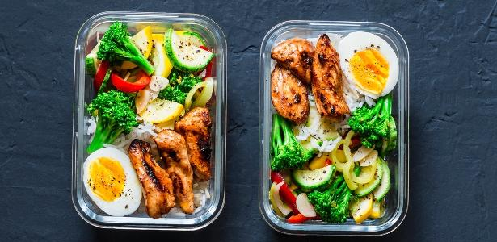

Dica do Dia
Mude sua dieta
Não adianta se esforçar na academia se, quando chega em casa,você consome alimentos com açúcar, gordura, sódio, entre outros ingredientes maléficos para a saúde.
Isto posto, tente manter uma alimentação equilibrada e seus resultados certamente serão mais positivos.
Alimentação Conciente

O Comer Consciente
O comer consciente virou meio que uma palavra de moda no mundo da saúde. À medida que as pessoas se afastam das dietas da moda e das restrições de calorias (liberdade!), elas procuram uma maneira de desfrutar de seus alimentos sem ganhar peso indesejado e sem comer demais.O comer consciente pode ser encarado como uma forma de reforçar a conscientização. O principal desta estratégia de alimentação saudável é diminuir o ritmo e estar totalmente em sintonia com todos os sabores e texturas do alimento à mão. Por exemplo, respirar profundamente entre os bocados e notar os diferentes sabores e texturas do prato. Trazer a consciência plena para a sua refeição exige colocar as tecnologias para longe, desligando a TV. O celular e realmente apreciando cada mordida.
Receita do Dia
Carne de Panela
1 kg de carne de acém cortada em cubos grandes2 colheres (sopa) de óleo de milho
2 colheres (sopa) de cebola granulada
2 cubos de caldo natural
colorau a gosto
cheiro-verde desidratado a gosto
água (até cobrir a carne)
5 batatas médias descascadas e cortadas ao meio
Alimentação Conciente